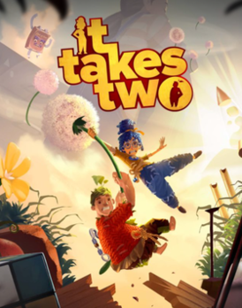

Разнообразие
Быстрота
Преимущества Unity
- Это кроссплатформенный движок для разработки игр, что означает, что игры можно использовать на нескольких платформах.
- Он лучше всего подходит для разработчиков инди-игр, так как его персональная лицензия бесплатна.
- Для расширения его возможностей доступно большое количество плагинов.
- У него есть собственный магазин активов, откуда можно загрузить готовые игровые активы.
- Он прост в использовании, поэтому используется большинством разработчиков игр для создания игр и приложений.
Недостатки Unity
- Рендеринг unity происходит медленнее по сравнению с движком unreal.
- Unity не подходит для ААА-игр.
- Импорт шаблонов с других платформ не допускается, поэтому все нужно создавать с нуля.

Subnautica
Игроку необходимо выживать в океане среди множества существ, многие из которых крайне недружелюбны. Как в многих других играх в жанре выживание, есть индикаторы здоровья, жажды и голода, а также кислорода, нехватка которого, при постоянной необходимости нырнуть поглубже, представляет огромную проблему. Её можно частично решить, создавая разного объёма акваланги или подводный транспорт. Для продвижения по сюжету также требуется создавать различные новые инструменты, еду и транспорт.
Genshin Impact
В игре игроку необходимо управлять одним из четырёх взаимозаменяемых персонажей в группе. Переключение между персонажами может быть выполнено быстро во время боя, что позволяет игроку использовать несколько различных комбинаций навыков и атак. Сильные стороны персонажей могут быть усилены различными способами, например, повышением уровня персонажа, улучшением артефактов и оружия, которым вооружён персонаж. В дополнение к исследованию, игрок может попробовать различные испытания за вознаграждение. По всему Тейвату разбросаны боссы и испытания, которые вознаграждают их исследование за очень ценные ресурсы.


Cuphead
Cuphead — shoot 'em up-игра, основанная на непрерывных боях с боссами. Персонаж игрока, Чашек, проиграл в споре с дьяволом и пытается вернуть долг. Игра имеет вид разветвляющейся последовательности уровней. У Чашека бесконечное число попыток, и он не теряет оружие после смерти. У главного героя игры есть способность парирования различных объектов, закодированных розовым цветом. Успешные парирования заполняют специальный счётчик, который позволяет ему выполнять специальную способность.
Преимущества Unreal Engine
- Он имеет простой интерфейс, с помощью которого можно легко начать разработку игр.
- У него есть функция узла, которая позволяет разрабатывать игры без написания кода.
- Он поставляется с безупречным графическим качеством.
- Он имеет лучшую технологию рендеринга, которая работает довольно быстро, чем другие игровые движки.
- Он поставляется с готовыми игровыми уровнями, которые дают первоначальный старт разработчикам игры.
Недостатки Unreal Engines
- Он взимает 5% роялти, как только ваша опубликованная игра заработает 1 миллион долларов.
- Он предоставляет меньше плагинов, чем Unity.
- Он нуждается в мощном процессоре, а также выделенной видеокарте и памяти.
Atomic Heart
Atomic Heart представляет собой приключенческий шутер от первого лица с элементами ролевой игры. Место действия — открытый мир комплекса под кодовым названием «3826», который, по словам генерального директора Mundfish Роберта Багратуни, представляет собой «весь Советский Союз, широкий круг» от Арктики на севере до Алтайских гор на юге. В игре представлено разнообразное модифицируемое оружие ближнего и дальнего боя, а также разнообразные враги, которые могут быть механическими, биомеханическими, биологическими и летающими. Система крафтинга позволяет собирать оружие из металлических деталей, которые можно получить от роботов или от различных приборов.
It Takes Two
It Takes Two — компьютерная игра в жанре action-adventure с элементами платформера. Она была специально разработана для игры в кооперативном режиме на разделённом экране, а потому для игры требуется второй игрок, который также может подключиться по сети. Игроки управляют родителями маленькой девочки, находящимися на грани развода. Волшебная книга о любви превращает героев в маленьких кукол, и теперь, чтобы вернуть себе прежний облик, им необходимо перешагнуть через свои обиды и разногласия и действовать вместе, помогая друг другу в этом сложном, но ярком и эмоциональном приключении. В игре представлено множество игровых механик из игр разных жанров.
